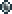
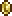

Монеты из разных металлов — основная валюта игры "Terraria". На них покупаются и продаются предметы и услуги NPC.
Виды монет
Существует четыре вида монет. Монета каждого следующего вида равна по достоинству 100 монетам предыдущего: серебряная монета равна 100 медным, золотая — 100 серебряным, платиновая — 100 золотым. Разные виды монет обладают разным уроном при стрельбе из денежной пушки.
| Медная монета |  |
ID: 71 |
| Серебрянная монета |  | ID: 72 |
| Золотая монета |  | ID: 73 |
| Платиновая монета |  |
ID: 74 |
| Медаль защитника |  |
ID: 3817 |
В таблице представлен 1 вид монет которые не создаются, их можно получить во время события армия древних. Монеты называются Медаль защитника. Используются только при торговле с Трактирщиком
Получение
Существует несколько способов получить монеты:
- Уничтожение монстров и боссов. Из многих монстров после смерти выпадают деньги, которые можно подбирать.
- Горшки, сундуки и кошельки, которые можно найти на поверхности и в подземельях, иногда содержат деньги. Также при разбивании горшков можно открыть золотую червоточину.
- Деньги можно получить от NPC, продавая им вещи.
- Также продавать предметы можно другим игрокам на барахолке.
- Выбивать монеты из Перерабатывателя с помощью ила, слякоти и пустынной окаменелости.
- В генерациях под землей лежат монеты (пещера заполненная блоками в случайном порядке)
Создание монет
Монеты каждого вида можно создавать из 100 монет предыдущего вида или, наоборот, разбить на 100 монет предыдущего вида. Для этого не требуется какого-то оборудования вроде верстака или наковальни — монеты можно разбивать просто в своём инвентаре.
- Из 100 медных монет можно сделать 1 серебряную.
- Из 1 серебряной монеты можно сделать 100 медных.
- Из 100 серебряных монет можно сделать 1 золотую.
- Из 1 золотой монеты можно сделать 100 серебряных.
- Из 100 золотых монет можно сделать 1 платиновую.
- Из 1 платиновой монеты можно сделать 100 золотых.
Монеты по достижению 100 монет автоматически "сливаются" в 1 монету следующего вида.
Смерть и деньги
Когда герой погибает на лёгкой сложности, половина (75% в Эксперте), с округлением в большую сторону, его денег выпадает на месте его смерти. Если вернуться на место смерти, монеты можно подобрать, в противном случае они пропадут. Потери денег можно избежать, если хранить их в сундуке, сейфе или свинье-копилке. Однако в PvP режиме деньги не теряются, если же вас, конечно, не добьёт дебафф, к примеру от огнемета, догоранием, тогда Вы потеряете часть денег.